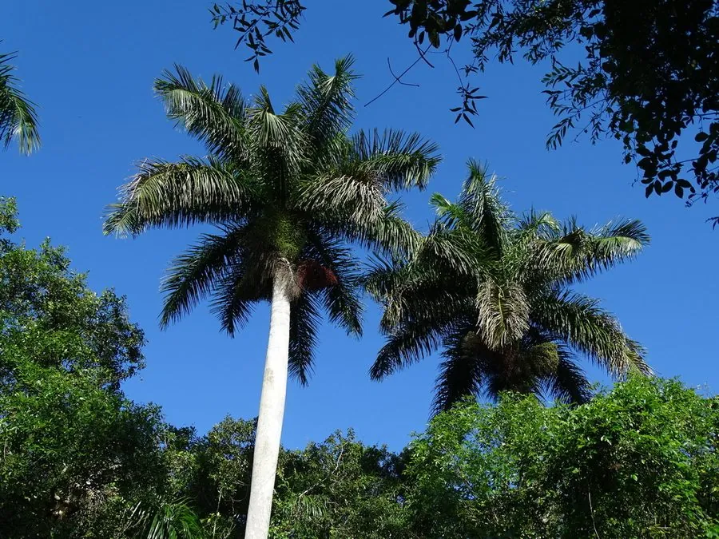

乔木 · 植物界
大王椰子 Roystonea regia

原产古巴的著名热带景观棕榈，树干中部膨大如瓶，羽状叶长而舒展，是南方城市与公园常见的行道树。
- 分类
- 门被子植物门纲百合纲目棕榈目科棕榈科属王棕属
- 栖息环境
- 海拔 500 米以下的热带亚热带地区，喜高温多湿、光照充足
- 地理分布
- 原产古巴、牙买加等加勒比海地区；中国广东、广西、海南、福建等地栽培
- 保护级别
- 暂无评估；中国未列入国家重点保护野生植物名录
物种志
大王椰子为常绿乔木，高可达 20 m，树干通直、不分枝，中上部膨大呈瓶状，表面灰白色、光滑，有环状叶痕；羽状复叶长可达 4 m，小叶多数、线状披针形，排列整齐，叶鞘绿色、光滑。花期 2–4 月，肉穗花序生于叶鞘下方，花小、白色；核果球形，成熟时红褐色至紫黑色。
大王椰子原产古巴、牙买加等加勒比海地区，中国广东、广西、海南、福建、云南等地栽培，喜高温多湿、光照充足，适宜深厚肥沃、排水良好的土壤，不耐寒。它树形雄伟、姿态优雅，树干膨大如瓶，是热带与亚热带城市中最具代表性的景观棕榈之一，常作为行道树及公园、广场的景观树；果实可作饲料，木材可制器具。
形态与习性
- 株高可达 20 m，树干中上部膨大
- 花期2–4 月，肉穗花序生于叶鞘下方
- 果期8–10 月，核果红褐色
- 光照喜光，不耐长期荫蔽
- 水分喜湿润，怕积水
- 土壤深厚肥沃、排水良好的土壤
- 主要用途行道树与景观树、果实作饲料、木材制器具
趣味知识
- 大王椰子的树干中上部膨大如瓶，是它最醒目的形态特征。
- 大王椰子的羽状复叶可长达 4 m，在风中舒展，很有热带风情。
- 大王椰子原产古巴，因树形雄伟，被广泛用作热带城市的景观行道树。
- 大王椰子的果实成熟时由红褐色转为紫黑色，成串挂在叶鞘下方。